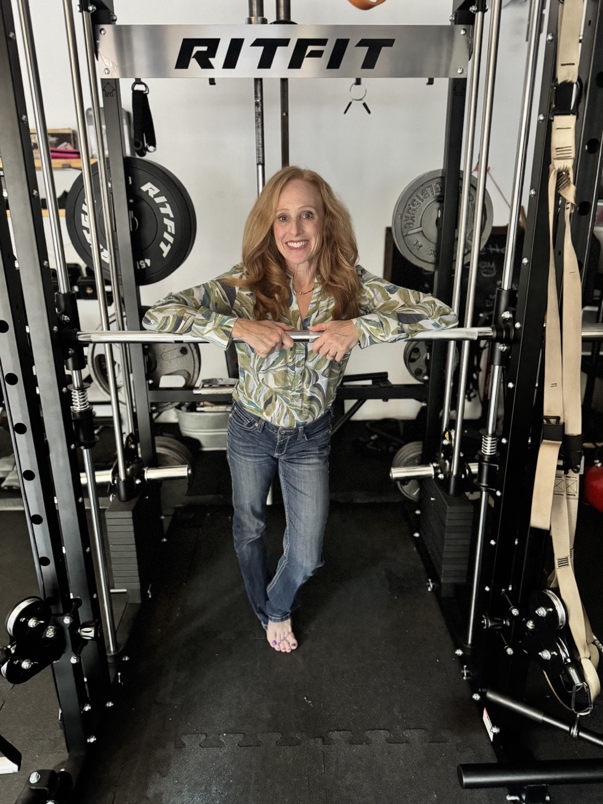

Episode 1
Opening Central Texas Homes to the World
Meet Audrey Handelsman
A personal trainer of 30+ years, Audrey's real passion project is matching foreign exchange students with host families across the Austin area — and building connections that outlast the school year.